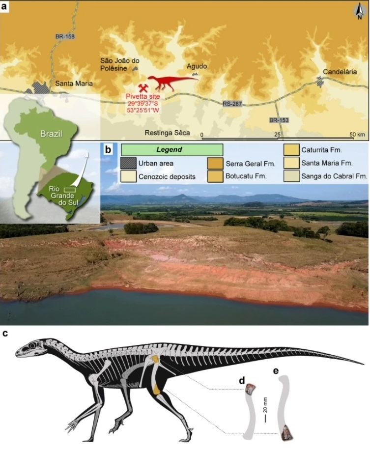
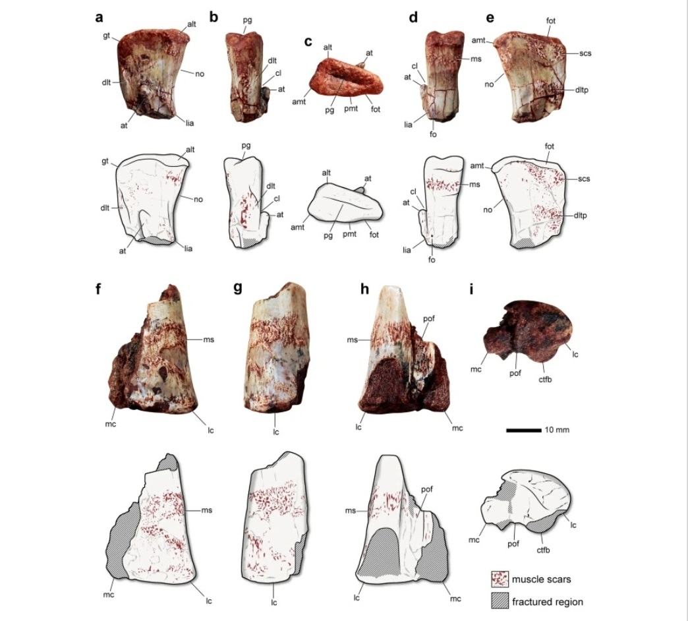
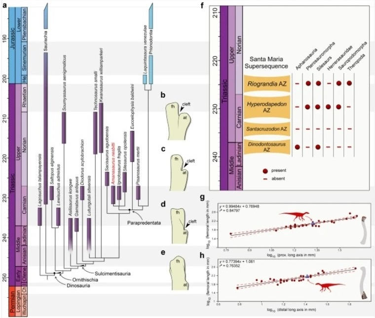

<!DOCTYPE html>
<html lang="en">
<head>
    <meta charset="UTF-8">
    <meta name="viewport" content="width=device-width, initial-scale=1.0">
    <title>Document</title>
    <link rel="stylesheet" href="style.css">
</head>

<body>
    <script src="search.js"></script>
    <script>
        let ll=0;let r=0;let y=0;


let masIndex=[0,'вступ','матеріали та методи','опис','філогенетичний аналіз','обговорення']
let masText=[0,`с частиною широкого <a class="q" txt="відрізок часу дє зїявилиь пер
 щі динозаври">тріасового</a> випромінювання <a class="q" txt="це єволюційна група до якої входять птерозаври та дінозаври">архозаврів</a>.ґ<br> Для більшості силезаврів характерні тонкі кінцівки та «дзьобоподібний» виступ від переднього кінчика нижньої щелепи.<br> У той час як ці рептилії присутні в літописі скам'янілостей середнього та верхнього трасу, не було повідомлено про жодні записи з юрського періоду чи молодших шарів.<br><br> Силезаври особливо цікаві через їхні тісні філогенетичні спорідненості з динозаврами, у кількох дослідженнях силизаври вважаються найближчими еволюційними родичами динозаврів. З іншого боку, існують альтернативні гіпотези, згідно з якими силезаврів відновлюють як представників Ornithischia. Цей останній сценарій підтримує дві основні моделі силизаври є частиною монофілетичного угруповання (тобто широкої Silesauridae), яка є сестринською групою «традиційних/основних орнітісхій». або силизаври зібрані в <a class="q" txt="група видів зі спільним предком">клади</a> з низьким розмаїттям, що представляють стовбурову групу, що веде до «традиційних/основних орнітісхій». Незважаючи на конкуруючу спорідненість сілезаврів, ці рептилії є ключовими <a class="q" txt="група яка мостить в собі інщи группи з схожими яклстями найменший таксон це вид">таксонами</a> для розуміння світанку походження пташиного стебла. Сілезаври є найдавнішими динозавроморфами, про які в літописі скам'янілостей, що дає підказки щодо плану тіла предків біогеографії групи. Знахідки середнього трасу в Бразилії, Танзані та Замбі підтверджують гондванське походження силезаврів, тоді як у верхньому трасі ця група була присутня в обох, Гондвані, Лавразії.<br> Незважаючи на те, що скам'янілості з Південної Америки обмежені Аргентиною та Бразилією, вони особливо багаті. Є два види з Аргентини: Lewisuchus admixtus з ранніх <a class="q" txt="шар землі віком від 227 до 237 мільонів років">карнійських шарів</a> формації Chañares, i ignotosaurus fragilis, з пізнього карнійського періоду формації Ischigualasto!!!<br><br> У Бразилії також є два види: Gamatavus antiquus, з ладинського/раннього карнійського періоду формації Санта-Марія; і Sacisaurus agudoensis, a раннього норіанського періоду формаці Катурріта.<br> Крім того, є силезаври без назви, про яких повідомляється, з середньо-пізніх карнійських шарів формації Санта-Марія. Цей безіменний матеріал примітний тим, що він походить із найдавніших однозначних пластів динозаврів у всьому світі, що є доказом спільного існування різних груп пан-авів у цей вирішальний момент. На жаль, нестача силезаврів із цих шарів затьмарює наше екологічних зв'язків між цими групами. Тут ми описуємо перші види силезаврів із карнійських (верхньотріасових) шарів із Бразилії та обговорюємо його роль в еволюційній історії групи  <br>  цю інформацію було взято та видозмінено з сайту Nature<br>оригілал створено Родріго Т. Мюллер і Maypicio C. Гарсія <a href="https://www.nature.com/articles/s41598-023-32057-x?error=cookies_not_supported&code=830e3f76-a442-45bf-9316-93fce70978fd">оригінал</a><br> `
 
,`

Інституційні скорочення

CAPPA/UFSM Centro de Apoio à Pesquisa Paleontológica da Quarta Colónia da Universidade Federal de Santa Maria, São João do Polésine, Rio Grande do Sul, Brazil, CRILAR-Pv Paleontologia de Vertebrados, Centro Regional de Investigaciones Científicas y Transfercia Tecnologica, Anillaco, Аргентина; MNA Museum of Northern Arizona, Флагстафф, США, NMMNH New Mexico Museum of Natural History and Science, Альбукерке, США, UFSM Laboratório de Estratigrafia e Paleobiologia, Universidade Federal de Santa Maria, Santa Maria, Rio Grande do Sul, Brazil.<br><br>

Зразок

Описані зразки зберігаються в колекці палеохребетних Centro de Apoio à Pesquisa Paleontológica da Quarta Colonia/Universidade Federal de Santa Maria (CAPPA/UFSM) під номером зразка САРРА/UFSM 0374 та CAPPA/UFSM 0375.<a class="i w" txt="Походження Атmanasaurus nesbitti gen, et sp. лис. (а) Поверхневий розподіл геологічних одиниць у районі, що зображує розташування ділянки Піветта. (b) Загальний вигляд ділянки Pivetta. (с) гіпотетична реконструкція скелета Amanasaurus nesbitti gen, et sp. лис. із зображенням (помаранчевим кольором) збережених частин. (d )CAPPA/UFSM 0374 (голотип), проксимальна частина правої стегнової кістки у вигляді спереду (е) CAPPA/UFSM 0375 (згаданий зразок), дистальна частина лівої стегнової кістки у вигляді спереду. Малюнки створено за допомогою GIMP"></a><br><br>

Філогенетичний аналіз

Щоб отримати доступ до філогенетичної спорідненості нового силезавра, його оцінили в матриці даних Norman et al 10, яка є модифікованою версією матриці даних, опублікованою Muller & Garcia,<br> Це найповніший набір даних про силезаврів. Крім того, ми вставили Gamatavus antiquus, нещодавно описаного силизавра з Бразилії. Його оцінка була проведена шляхом безпосереднього дослідження голотипу (UFSM 11348а, часткова права клубова кістка) та зразка, що передається (UFSM 113485, часткова ліва стегнова кістка) Chilesaurus diegosuarezi був видалений з матриці даних через його суперечливу спорідненість 20.<br> Найбільш економні дерева були відновлені в програмному забезпеченні TNT v. 1.522.<br> Усі отримали однакову вагу, а також символи 4, 13, 18, 25, 63, 82, 84, 87, 89, 109, 142, 166, 174, 175, 184, 186, 190, 201, 203, 205, 209, 212, 225, 235, 236, 239, 250 і 256 розглядалися як додаткові (впорядковані).<br> Euparkeria використовувався для вкорінення найбільш ощадливих дерев, які були побудовані за допомогою випадкової послідовності додавання повторного з'єднання дерева навпіл (TBR), що включало 1000 реплікатів дерев Вагнера (з випадковим насінням = 0), TBR і заміну гілок (зберігаючи 20 дерев), за повторність).

<br><br>Критерії оцінки довжини стегнової кістки

Загальну довжину кістки CAPPA/UFSM 0374 : CAPPA/UFSM 0375 оцінювали за двома звичайними лінійними регресіями найменших квадратів із використанням набору даних Barrett et al. 2 Цей набір даних вимірювання 31 стегнової кістки різних орнітодранів тріасу та нижньої юри Довжину стегнової кістки CAPPA/UFSM 0374 оцінювали за допомогою проксимальної довгої осі головки стегнової кістки як незалежної змінної, тоді як довжину стегноВОЇ КІСТКИ САРРА/UFSM 0375 оцінювали за допомогою дистальної довгої осі як незалежної змінно.   <br><br><br>Сайт Pivetta (29°39′37° пд. ш. 53°25′51° зх. д.), між муніципалітетами Рестінга-Сека та Сан-Жуан-ду-Полесіне, Ріу-Гранді-ду-Сул, Бразилія.<br> Нижня частина канделарійської послідовності 29 суперпоследовательності Санта-Марія, басейн Парани.<br> Присутність ринхозавра Hyperodapedon поміщає ділянку Pivetta в зону збору Нурeгodapedon, яка вважається віком від середини до пізнього карнію (пізній тріас) відповідно до високоточної U-Pb геохронології цирконів, яка вказала на максимальний вік 233,23 ± 0,73 млн років тому.`
,


`Amanasaurus nesbitti від усіх інших відомих силазаврів порівнянним матеріалом (локальні

аутапоморфа) задньомедіальний горбок головки стегнової кістки, зменшений до повної відсутності <a class="q" txt="передній край">вентральний край</a> передньомедіального бугра перевищує край головки стегнової кістки, наявність fossa trochanterica; відсутність піднятого передньобокового рубця, наявність напівкруглого рубця на заднедорзальной поверхні головки стегнової кістки, щілина між проксимальним кінчиком переднього вертлюга та <a class="q" txt="це частина стегнової кістки яка знаходиться поміж шарнірів">діафізом стегнової кістки</a> (див. Додаткову інформацію для диференціальної діагностики).
<br><br>

Головка стегнової кістки Amanasaurus nesbitti добре збереглася (рис 2а-e).
 Поверхня кістки зберігає дрібні деталі, зразок не має ознак осадового стиснення.<br>
  Подібно до інших силезаврів, головка стегнової кістки розширена в поперечному напрямку.
  <a class="i w" txt="Голотипі згаданий зразок Amanasaurus nesbitti gen, et sp. лис. із канделарійської товщі
   (середина-пізній карній) суперпослідовності Санта-Марія, південна Бразилія. Голотип (CAPPA/UFSM 0374)
    у передньому (а), латеральному (в), проксимальному (с), медіальному (d) та задньому (е)
     видах Відповідний зразок (CAPPA/UFSM 0375) у передньому (1), латеральному (д), задньому (h)
      дистальному (1) виглядах. alt передньо-латеральний бугор, aть передньо-медіальний бугор, у передньому trochanter,
       cl cleft, ctfb crista tibiofibularis, dit dorsolateral trochanter, ditp posterior partion of dorsolateral trochanter,
        fo foramen, fot fossa trochanterica, gf large trochanter, ic lateral condyle, lia linea intermuscularis cranialis,
         то медіальний виросток, ms м'язовий рубець, без виїмки, рд проксимальна борозна, роб підколінна ямка,
          scs субциркулярний рубець. Малюнки створено за допомогою GIMP 2.8 (https://www.gimp.org/)."></a><br> Ця умова відрізняється від Am. nesbitti від більшості динозаврів <a class="q" txt="предки птерозаврів">птерозавроморфів</a>. У <a class="q" txt="ближній. Розташований ближче до середини площин тіла">проксимальному</a> вигляді він має трикутну форму з глибокою прямою борозенкою, що розділяє передню і задню поверхні (рис 2с).<br> Ця борозенка відсутня у Lewisuchus <a class="q" txt="ближче до центру">Медіальна</a> суглобова поверхня пряма, тоді як у Ladmixtus 1 Aslisaurus kongwe вона закруглена.<br> Передньолатеральний бугор добре розвинений, а також передньомедіальний. Останній утворює заднемедіальний край головки кістки (рис 2е), обмежуючи крайне розширення суглобової поверхні проксимальної частини голівки стегнової кістки, як, наприклад, у Sacisaurus agudoensis 14.<br><br> На відміну інших бульб задньомедіальний горбок розвинений слабко, у проксимальному вигляді відсутній борозна для зв'язки каптиса стегна. Заднемедіальний горбок L admixtus, As. kongwe ta Eucoelophysis baldwini добре розвинений 12-35, чим відрізняється від нового зразка.<br> Є редукована fossa trochanterica (рис 2c), що нагадує As. kongwe Y L. admixtus він добре розвинений 19, тоді як в інших силезаврів він відсутній. Великий вертлуг скошений, тоді як у лагерпетид він заокруглений.<br> У зразка відсутня «структура виступу» на проксимальній поверхні, про яку повідомляють деякі зразки opolensis. Присутня типова «виїмка» між вентральним переходом від голівки стегнової кістки до діафіза (рис 2а). Це відрізняється від увігнутого вирізу, який позначає перехід у більшості Динозаврів. Крім того, на медіальній суглобовій поверхні головки стегнової кістки над вирізкою с поперечний рубець (рис 2г). В Si opolensis є подібний рубець, який утворює вентральний край точки прикріплення клубово-стегнової зв'язки.<br> На гомологічній поверхні Ѕа є гладка поверхня agudoensis 14. Його поверхня зменшена в Ат, nesbitti. На задній поверхні серця стегнової кістки є незвичайний субкруговий рубець (рис 2d), трохи нижче fossa-trochanterica. Про ідентичний шрам не повідомлялося в

інших силезаврів. Передня поверхня дорсолатерального вертлюга гостра і зливається з діафізом значно нижче проксимальної суглобової поверхні.<br> Навпаки, цей вертлуг закруглений для всіх онтогенетичних стадій, відібраних для As. kongwe. На бічній поверхні цього вертлюга проходить проксимодистально орієнтований рубець, тоді як поперечний рубець тягнеться від вертлюга до заднього краю діафіза стегнової кістки.<br> Піднятий передньолатеральний рубець відсутній, тоді як про нього повідомляється для L. admixtus, As. kongwe ta St. opolensis Дійсно, на гомологічній поверхні с слабкі смуги. Передній вертлюг пальцеподібний, тягнеться проксимодистально. Його проксимальний кінчик відокремлений від стегнової кістки щілиною, як, наприклад, у кількох силезаврів, прюнодонтів і тероподів.<br><br> З іншого боку, у L. admixtus (As. kongwe проксимальний кінчик плавно зливається з діафізом стегнової кістки, без щілини. У той час як проксимальний кінчик переднього вертлуга не з'єднаний зі стовбуром у новому зразку, він набагато менш розширений, нок крилоподібний вертлуг у кількох пріонодонтів.<br> Стан нового зразка також відрізняється від пірамідального переднього вертлуга деяких теропод. Проксимальний відділ linea intermuscularis cranialis лежить медіальніше переднього вертела.<br> Відсутня в Sa. agudoensis. Отвір пронизує діафіз стегнової кістки медіально від проксимальної частини краніальної можм'язової лінії.<br> Трохантерна поличка відсутня, стан спільний з Sa. agudoensis, E. baldwini, Kwanasaurus williamparkeri, Diodorus scytobrachion та prionodontians.<br><br><br>

Згадана <a class="q" txt="нижня частина">дистальна частина</a> лівої стегнової кістки має добре збережену поверхню кістки.<br>
 3. іншого боку, кістка На відміну від lagerpetids, передня поверхня є опуклою в <a class="q" txt="далекий">дистальному</a> 
 вигляді, без будь-яких ознак розгинальної борозенки.<br> Існує рельєфний рубець, що тягнеться від передньої до бічної поверхні кістки,
  що є звичайним для динозавроморфів.<br> <a class="q" txt="з боку">Латеральний</a> край латерального виростка заокруглений у дистальному
   вигляді, і мож цим виростком і crista tibiofibularis є заглиблення. Точний розмір форма crista tibiofibularis медіального виростка 
   невідомі.<br> У той час як підколінна ямка збереглася не повністю, вона подовжена проксимодистально , що нагадує стан більшості 
   силезаврів і афанозаврів. Піднятий рубець проходить від поверхні над crista tibiofibularis у ямку. <br> `,


`Евристичний пошук відновив 1728 найбільш економних дерев (МРТ) по 1074 кроки кожне з індексом узгодженості 0,298 та індексом збереження 0,689. <br><br>Загальна топологія дерева суворого консенсусу відповідає топологи, яку відновили Norman et al. 10, де силезаври гніздяться в групах з низьким різноманіттям у гілці, яка веде до Prionodontia (тобто традиційних орнітісхій). <br>Amanasaurus nesbitti як парапредентатан у Ornithischia у всіх МРТ. <br>Новий таксон гніздиться в трихотомі з Ignotosaurus fragilis i Silesarus opolensis, яка підтримується ямкою на вентральній поверхні постацетабулярної частини клубової кістки (гл. 174:12), пластинка клубової кістки вдвічі глибша або більша кульшову западину (гл. 1870 1), а борозна зв'язки голівки стегнової кістки не утворює медіальної екскавації в проксимальному вигляді (гл. 204:01). Тільки останній символ закодований для Am. nesbitti. Дотримуючись філогенетичного визначення, запропонованого Nesbitt et al. 4, клада, що підтримується відсутністю вертлюжної полиці стегнової кістки (гл. 215.01) i facies articularis antitrochantericа, що не опускається (гл. 216:01). <br>Крім тогo, Saltopus elginensis гніздувався як сестринський таксон Lewisuchus admixtus і вперше був знайдений як орнітіш. <br><br>Однак цей результат слід сприймати обережно, враховуючи фрагментарність і складність інтерпретації голотипу. <br>У попередніх ітераціях цього набору даних Ѕa. elginensis був знайдений як рано розходиться саурисхій,<a class="i w" txt="Результати аналізів. (а) Відкаліброване за часом скорочене суворе дерево консенсусу, що зображує філогенетичне положення Атanasaurus nesbitti gen, et sp. лис. (b) Ліва (перевернута) стегнова кістка Scutellosaurus lawleri (MNA 175) у виді збоку. (с) Ліва (перевернута) стегнова кістка Eucoelophysis baldwini (NMMNH P-22298) у вигляді збоку. (1) Права стегнова кістка Атanasaurus nesbitti gen. et sp. лис. (CAPPA/UFSM 0374) вид збоку. (е) Права стегнова кістка Lewisuchus admixtus (CRILAR-Pv 552) у вигляді збоку (1) Поява Пан- Авес відповідно до зон асоціації Бразилії від середнього до верхнього тріасу; (9) Діаграма логарифмічної 10 -трансформованої проксимальної довгої осі стегнової кістки проти логарифмічної 10-трансформованої довжини стегнової кістки окремих орнітодіранів, що зображує (фіолетовий трикутник) розрахункову довжину стегнової кістки для голотипу Аmanasaurus nesbitti gen, et sp. лис (1) Діаграма логарифмічної та -трансформованої дистальної довгої осі стегнової кістки проти логарифмічної 10 -трансформованої довжини стегнової кістки окремих орнітодіранів, що зображує (фіолетовий трикутник) розрахункову довжину стегнової кістки для згаданого зразка Аmanasaurus nesbitti gen, et sp. лис. Малюнки створено за допомогою GIMP 2.8 ("></a> сестра Eodromaeus murphi як динозавроморф не динозавра
   `,
`
Amanasaurus nesbitti має типові ознаки силезаврів, такі як наявнІСТЬ ВИМКИ МІж <a class="q" txt="передній">вентральним</a> переходом від головки стегнової кістки до діафіза та прямою медіальною суглобовою фасеткою проксимальної частини в проксимальному вигляді 1.11.14.28.25. Тому Ат, nesbitti можна сміливо віднести до силезавра.<br> Хоча у згаданого зразка відсутній матеріал, що перекривається з голотипом, збережена дистальна частина стегнової кістки нагадує таку в інших силезаврів (наприклад, наявність подовженої підколінної ямки) і не має типових ознак інших споріднених груп. Отже, цей екземпляр відноситься до Ат. nesbitti на основі геалогічного контексту та спільної морфології з іншими силезаврами.

<br>Щодо загальної <a class="q" txt="будови">морфології</a> Ат. nesbitti, він має унікальний набір плезоморфних і а поморфних рис для силезаврів, що узгоджується з його філогенетичним стратиграфічним положенням.<br><br> Він зберігає fossa trochanterica, рису, присутню у старих силезаврів, таких як Lewisuchus admixtus Asilisaurus kongwe 19.35 Навпаки, заднемедіальний бугор надзвичайно зменшений, що нагадує стан, який спостерігається у пізніх розходяться форм, таких як у Sacisaurus agudoensis Kwanasaurus williamparkeri. Мабуть, «перехідна» форма переднього вертлуга є однією з найцікавіших особливостей нового таксону. Передній вертел Динозаврів і близьких до них груп зазвичай розглядається як точка вставлення m. iliofemoralis 40.42 y ранніх силезаврів (наприклад, L. admixtus, As. Kongwe, Gamatavus antiquus) проксимальний кінчик

повністю з'єднаний із діафізом стегнової кістки, тоді як у пізніх розходяться форм (наприклад, Eucoelophysis baldwini) його кінчик повністю відокремлений від валу позначеною щілиною 15.<br> Цей стан інтерпретується як рання стадія «крилоподібного» переднього вертлуга пріонодонтів iз додатковою підтримкою спорідненості з орнітішами у силезаврів 11.14 B Am, nesbitti, передній вертлуг менш виражений, ніж у посткарнійських силезаврів, однак він містить щілину, що відокремлює

проксимальний кінчик від діафіза стегнової кістки. Новий таксон включає найдавнішого який виражає цю умову, показуючи карнійське походження цієї особливості Новий силезавр забезпечує подальшу підтримку присутності силезаврів у зоні збирання гіперодаледонів
(AZ) Бразилії. Про цих рептилій повідомляється для трьох із чотирьох AZ, віднесених до середнього та верхнього тріасу 8.17. Поточний сценарій зображує повну відсутність силезаврів та інших пан-авів виключно в Santacruzodon AZ, вибірки погано порівняно з іншими AZ, його географічне поширення обмежене.<br> Крім того, присутність нового силезавра в карнійських шарах Південної Бразилії підтверджує спільне існування різних груп Пан-Авес під час початкової еволюці динозаврів (прибл. 230 млн років).<br> Новий сілезавр походить із оголення, де були виявлені лагерпетиди, ранні зауроподоморфи та герреразавриди 15.16.48. <br>Це різноманіття Pan-Aves перевершує різноманіття старих AZ з Бразилії (тобто Dinodontosaurus AZ Ta Santacruzodon AZ), будучи порівнянним з різноманіттям Riograndia AZ. Подібне розмаїття також повідомляється про одновікову формацію Ischigualasto 1, де також повідомляється про силезавра (тобто Ignotosaurus fragilis).<br><br> Розумно зробити висновок, що ландшафти, які були свідками ранньої еволюці динозаврів, також підтримували широкий спектр пташиних архозаврів.<br> Крім того, згідно з оцінками довжини стегнової кістки, проведеними тут, Am. nesbitti досяг такого ж розміру ранніх зауроподоморфів. Розрахункова довжина стегнової кістки голотипу (CAPPA/UFSM 0374) становить 121 мм, тоді як для згаданого зразка (CAPPA/UFSM 0375) вона становить 143 мм.<br> Для порівняння, довжина стегнової кістки екземплярів раннього зауроподоморфа Buriolestes schultzi коливається від 89 мм (ULBRA-PVT056) до 138 мм (ULBRA-PVT28049). Ці зразки були викопані з корелятивних шарів, які знаходяться на відстані 500 м від місця Піветта. <br>Це перший випадок, коли силезаврів, які за розміром конкурують з динозаврами, знайшли з найдавніших безсумнівних пластів динозаврів, що ставить під сумнів ідею про те, що у фаунах, де силезаври однозначні динозаври зустрічалися разом, силезаври були відносно меншими Це відкриття підкріплює складний сценарій щодо випромінювання Пан-Авеса протягом тріасу.<br><br> Безумовно, план тіла ранніх дивергентних форм, перевершуваних пізніми дивергентними динозаврами, більше не вписується в поточні моделі. <br>Насправді силезаври незалежно від їхнього філогенетичного положення зберігалися протягом більшої частини трасового перюду, з плезіюморфним розміром тіла, що розвивався на світанку динозаврів, замість того, лінії сілезаврів зменшувалися в розмірі тіла з часом.
`]


</script>
  <script src="btn.js"></script>
</body>
</html>